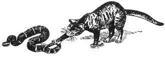
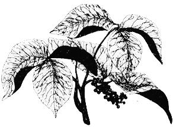
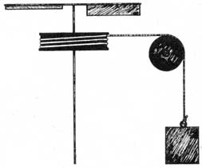

In the middle of page 106 of MOTHER NO. 30, Tom, Christine, and Jade Laughlin asked if drinking milk from goats who've eaten poison oak will lend immunity to the plant.
Why go to all that trouble? There's an easier way!
Each summer, when poison oak begins to show, I choose a small leaf-with a surface area of about one square inch-and eat it. This gives me immunity for some time . . . but the procedure should be repeated once more before the summer is over. Two treatments seem to render me immune for the entire season. And why not? We Indians have protected ourselves this way for thousands of years!
Furthermore, drugstores-for many decades-always kept a bottle of Rhus Toxicodendron fluid extract on their shelves. Doctors prescribed concoctions containing the substance to their patients in order to render them immune to poison oak. The advent of "modern medicines" has pushed such simple remedies into limbo . . . a practice which, no doubt, helps keep drug prices astronomically high.
I'm glad to see so many people working on alternative methods for harnessing power from the wind. For some time, it has seemed to me that old-fashioned methods for generating wind power need to be brought up-to-date with present-day technology.
John Thalmann's wind turbine (see page 82, MOTHER NO. 31) looks like a good idea. It seems to be quite simple (witness self-feathering vanes) and would lend itself easily to the problem of mechanically transmitting power to the ground. But someone seems to have garbled the turbine's engineering.
In the first place, the foot-pound is not used to compute torque . . . it's used to measure potential energy and impact. See any physics text.
In the second place, torque-without a time element-is not a function of power. Any conceivable torque could be concurrent with any conceivable power. What's needed here is a determination of the mechanism's horsepower.
If I had time to work on that problem, I'd go at it this way:
I'd put a drum as high as possible on the vertical shaft, and attach a rope to it. Then, I'd run the rope over a pulley (mounted on a horizontal axle) and down to a weight at ground level.
I'd experiment with a bucket and rocks to determine a specific weight (using a scale) that wouldn't load the turbine down too much, but would give the device some work to do. (Exactly how much weight you'd need would depend on a number of variables: windspeed, the sweep of the turbine, the area presented, the size of the drum, etc.) Then I'd find the time the turbine took to lift the weight a measured distance.
The number of foot-pounds-per-second divided by 550 would give me the device's horsepower (neglecting friction).
That was a good-and timely-article by Shirley G. Wade in MOTHER NO. 26 ("Survival in Rattler Country").
I'm glad to learn that king snakes prey on rattlesnakes. According to my limited experience, the king snake seems to be the one "creepy crawler" that might be thought of as a pet.
But . . . let me add one little thing to the article: While it's probably true of dogs, I don't find that cats tend to alert a person to the presence of snakes. Cats just kill the critters.
When I first got my shack in the country, my felines brought in about three snakes a day . . . and they worked at it diligently until there were no more serpents to be found. (We haven't seen one now in years.) My cats have been known to kill snakes up to seven feet long. Kitties are pretty fast and-although it certainly might happen-I've never heard of one actually being bitten.
If you really want to get rid of rattlers, get a road runner. That comical little chicken seems to think that battling rattlesnakes is great sport. I've never actually seen it happen, but I have a very interesting movie of the action . . . and the poor snake doesn't seem to have a chance.
|
 |
 |
 |